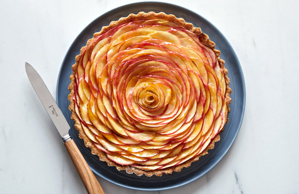

Rose Apple Tart

Description
This striking tart is all about the apples, and — believe it or not — it’s fairly simple to make. The crust is the pat-in-the-pan variety, and a mandoline makes quick work of slicing. For the most beautiful results, use firm tart apples with red or pink skin like Honeycrisp, Empire or Cortland, and stand the slices up vertically, rather than laying them flat. This tart is best the day it's made, but the shell can be made a day in advance, if you’d like to break up the work a bit. If you keep vanilla sugar in your pantry, this would be a great place for it. A sprinkle of cardamom wouldn’t hurt either.
However you choose to embellish, make sure to use a smooth apricot jam, rather than chunky preserves, for a smooth finish.
Ingredients
-
190g APF
-
65g confectioners' sugar
-
3/4 tsp kosher salt
-
140g cold unsalted butter, cut into .5 inch pieces, plus more for greasing the pan
-
1 egg yolk
-
.5 tsp vanilla extract
-
3 medium, crisp, tart apples (about 1 pound)
-
50g sugar for the filling
-
1 tbsp APF for the filling
-
3 tbsp unsalted butter for the filling
-
Large pinch of kosher salt
- 3 tbsp smooth apricot jam
Steps
-
Make the crust: Combine the flour, confectioners' sugar and salt in the bowl of a food processor fitted with the steel blade. Pulse a few times to combine. Scatter the butter pieces on top, and pulse until the butter is the size of small peas. Add the egg yolk and vanilla extract, and pulse until incorporated. Pulse in the water, about 2 teaspoons at a time, until the dough starts to hold together. It will appear to be a bit crumbly, but should hold together easily when pressed.
-
Lightly butter a 9-inch tart pan with a removable bottom, and pour the dough mixture into it. Press the mixture evenly on the bottom and up the sides of the pan. (Use a lightly floured straight-sided measuring cup to help press the dough into the corners of the pan.) Reserve extra dough to repair any cracks after the shell is baked.
-
Freeze the formed dough in the pan until completely firm, about 30 minutes. Meanwhile, heat oven to 375 degrees.
-
Line the tart shell with a piece of aluminum foil, making sure to tuck it into the corners and over the edges. Bake the shell for 20 to 25 minutes or until the dough appears dry and lightly golden. If the dough puffs up while baking, gently press it back into the pan with an offset spatula or similar tool. If necessary, repair any cracks with the remaining raw dough. Cool slightly while you prepare the apples.
-
Cut the apples from their cores in 3 pieces: Stand the apples up, with the stems facing up, and, using a sharp knife, cut 1 face of the apple, then rotate the apple about 120 degrees, slice again, and finally slice the last piece from the core. You should have a triangle-shaped piece of core left and 3 pieces of apple with flat bottoms.
-
Reserve a smaller piece of apple, and carefully slice all the other apples into very thin half-moons, about 1/8-inch thick. (A mandoline makes this move quickly, but, if you are using a knife and working slowly, it’s a good idea to squeeze a little bit of lemon juice over the sliced apples to prevent browning.) Make sure to keep the slices together as you cut to make the assembly easier.
-
Once the apples are sliced, build the tart: Sprinkle 1 tablespoon flour and 1 tablespoon sugar on the bottom of the blind-baked tart shell. Starting at the outer edge, arrange the apples in tight concentric circles, overlapping each slice about halfway over its neighbor. Take care to stand the apples up vertically, with the cut edges down and the peel edge pointing up. Pack the rows very tightly, stopping periodically to check your work.
-
As you move toward the center, the apples will become trickier to bend into place. If you find the slices are breaking, slice the reserved piece of apple even thinner to make it easier to bend. Roll the last few slices into a circle and tuck it in the center.
-
Sprinkle the remaining 3 tablespoons sugar and a pinch of salt over the apple slices. Take care to sprinkle the sugar between the apple slices, rather than on top. Scatter the butter pieces on top, and bake the tart for 40 to 45 minutes or until the apples begin to brown just slightly on the edges and the crust is a deep golden brown. Check the tart periodically to make sure the shell is not over-browning at the edges. If it is, cover the edges with foil.
-
Cool the tart on a rack for about 10 minutes, then prepare the glaze: In a small saucepan, warm the jam and a few drops of water over medium-low heat until it is runny. Use a pastry brush to very gently brush the warm tart with jam. Avoid brushing jam on the crust, but a thin layer all over the apple slices. Serve warm or room temperature.